/* Моя кошка замечательно разбирается в программировании. Стоит мне объяснить проблему ей - и все становится ясно. */
John Robbins, Debugging Applications, Microsoft Press, 2000

/* Моя кошка замечательно разбирается в программировании. Стоит мне объяснить проблему ей - и все становится ясно. */
John Robbins, Debugging Applications, Microsoft Press, 2000
Простое переключение на другой экран
Передача данных между активностями
Получить результат обратно
Приложение не всегда состоит из одного экрана. Например, мы создали очень полезную программу и пользователю хочется узнать, кто же её автор. Он нажимает на кнопку «О программе» и попадает на новый экран, где находится полезная информация о версии программы, авторе, веб-адресе сайта, сколько у него котов и т.д. Воспринимайте Activity как веб-страницу с ссылкой на другую страницу. Если вы посмотрите на код в файле HelloWorld.java из прошлых уроков, то увидите, что наш класс HelloWorld тоже относится к Activity или, если говорить точнее, наследуется от него.
public class HelloWorld extends Activity
Как нетрудно догадаться, нам нужно создать новый класс, который может быть похож на HelloWorld.java и как-то переключиться на него при нажатии кнопки.
Для эксперимента мы возьмем программу из предыдущего урока и будем использовать для опытов кнопку. А пока создадим новую форму для отображения полезной информации. Например, покажем пользователю, что делает кот, когда идёт налево и направо. Согласитесь, это очень важная информация, дающая ключ к разгадке Вселенной.
Создадим новый XML-файл разметки about.xml в папке res/layout. Выделите папку layout в правой части панели Eclipse, и щелкните на значок создания нового XML-файла на панели инструментов. На значке изображён символ A с плюсиком () На этот раз мы откажемся от контейнера RelativeLayout и воспользуемся контейнером ScrollView:
<?xml version="1.0" encoding="utf-8"?>
<ScrollView
xmlns:android="http://schemas.android.com/apk/res/android"
android:layout_width="fill_parent"
android:layout_height="fill_parent"
android:padding="10dip">
<TextView
android:id="@+id/about_content"
android:layout_width="wrap_content"
android:layout_height="wrap_content"
android:text="@string/about_text" />
</ScrollView>
Информация будет извлекаться из ресурсов, а именно из строкового ресурса about_text. Открываем файл res/values/strings.xml и вводим следующий текст:
<string name="about_text">
У лукоморья дуб зелёный;\n
Златая цепь на дубе том:\n
И днём и ночью <b>кот учёный</b>\n
Всё ходит по цепи кругом;\n
Идёт <b>направо</b> - песнь заводит,\n
<b>Налево</b> - сказку говорит.</string>
Обратите внимание, что мы можем использовать простейшие HTML-теги форматирования текста типа <b>, <i>, <u>. Для нашего примера достаточно выделить жирным слова, которые относятся к коту и направлению движения. Для перевода текста на новую строку используйте символы \n. Давайте добавим ещё один строковый ресурс для заголовка нового экрана:
<string name="about_title">О программе</string>
С разметкой разобрались. Далее необходимо создать класс для окна AboutActivity.java. Создаем новый класс в Eclipse: File | New | Class и заполняем нужные поля. Также можно нажать на специальный значок с символом C (Class) на панели инструментов.
Source folder: FirstAndroidApp/src
Package: ru.alexanderklimov.helloworld
Name: AboutActivity (расширение указывать не надо!)
Сейчас класс практически пустой. Добавим код вручную:
package ru.alexanderklimov.helloworld;
import android.app.Activity;
import android.os.Bundle;
public class AboutActivity extends Activity
{
@Override
protected void onCreate(Bundle savedInstanceState)
{
super.onCreate(savedInstanceState);
setContentView(R.layout.about);
}
}
Главное в этом классе - наличие методов onCreate() и setContentView().
Теперь начинается самое главное. Наша задача - перейти на новую форму при щелчке на кнопке. Переходим обратно к файлу HelloWorld.java и импортируем пространство имен Intent.
import android.content.Intent;
Теперь можем написать обработчик события Click для кнопки:
public void onClick(View v)
{
Intent intent = new Intent(HelloWorld.this, AboutActivity.class);
startActivity(intent);
}
Здесь я использовал способ обработки нажатия кнопки, о котором рассказывалось в занятии Щелчок кнопки/Счётчик ворон.
Для запуска нового экрана необходимо создать экземпляр класса Intent и указать свой класс AboutActivity. После этого вызывается метод startActivity(), который и запускает новый экран. Но, если вы сейчас попытаетесь проверить работу приложения в эмуляторе, то получите сообщение об ошибке. Что мы сделали неправильно? Мы пропустили один важный шаг. Необходимо зарегистрировать новый Activity в манифесте AndroidManifest.xml. Найдите этот файл в своем проекте и дважды щёлкните на нём. Откроется окно редактирования файла. Переключитесь в режим редактора кода (вкладка AndroidManifest.xml), и добавьте новый тег <activity> после первого тега activity для HelloWorld.
<activity android:name=".AboutActivity"
android:label="@string/about_title">
</activity>
Вот и пригодился строковый ресурс about_title. Запускаем приложение, щёлкаем на кнопке и получаем окно О программе. Таким образом мы научились создавать новое окно и вызывать его по щелчку кнопки. А в нашем распоряжении появилась мегаудобная программа - у вас всегда под рукой будет подсказка, что делает кот, когда идет налево.

Ещё раз обращаю внимание, что второй создаваемый класс активности должен наследоваться от класса Activity или ему похожих (ListActivity и др.), иметь XML-файл разметки и быть прописан в манифесте.
После вызова метода startActivity() запустится новая активность (в данном случае AboutActivity), она станет видимой и переместится на вершину стека, содержащего работающие компоненты. При вызове метода finish() из новой активности (или при нажатии аппаратной клавиши возврата) она будет закрыта и удалена из стека. Разработчик также может перемещаться к предыдущей (или к любой другой) активности, используя всё тот же метод startActivity().
Программисты, как и коты, существа ленивые. Постоянно помнить, что для активности нужно создать разметку и класс, который наследуется от Activity, а затем не забыть прописать класс в манифесте - да ну нафиг.
В этом случае нажмите комбинацию клавиш Ctrl+N. Откроется диалоговое окно для выбора мастера. В поле Wizards: будет текст type filter text, предлагающий ввести текст для быстрого поиска нужного мастера. Начинайте вводить слово Activity, чтобы быстро найти мастер для создания новой активности Android Activity:
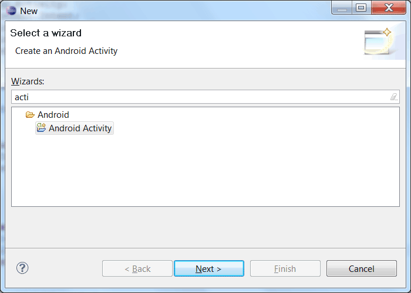
Нажимаем на кнопку Next, чтобы перейти к знакомому окну выбора шаблона для экрана. Пусть будет шаблон BlankActivity.
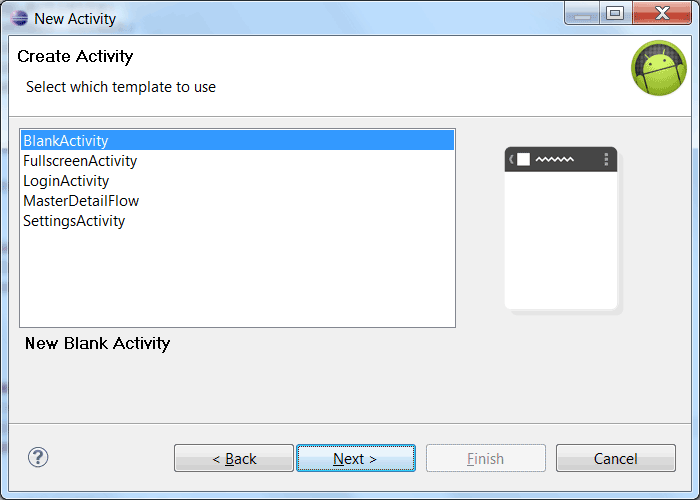
В следующем окне можно настроить параметры для активности: выбрать проект, имя для активности и другие настройки.
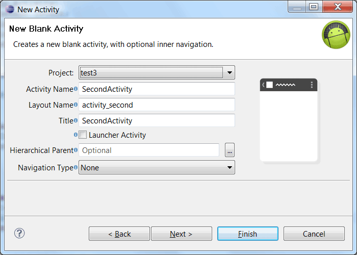
В последнем шаге мастера настроек вы можете видеть, какие изменения произойдут в проекте. Eclipse самостоятельно добавит записи о новой активности в манифест, добавит необходимые строковые ресурсы в файл strings.xml, создаст класс и т.д. Осталось нажать на кнопку Finish и продолжить работу над проектом.
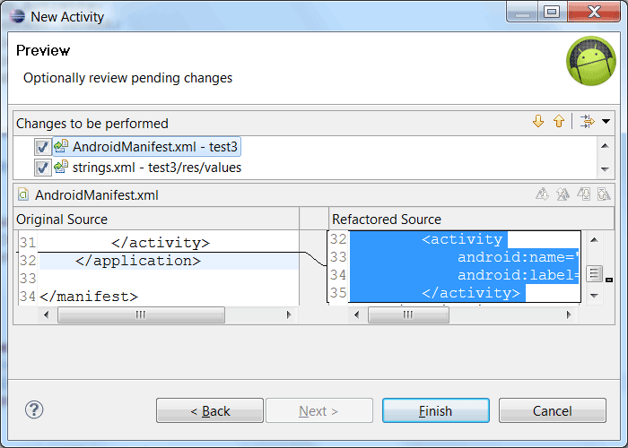
На первых порах я бы посоветовал вам вручную создавать все необходимые компоненты для новой активности, чтобы понимать взаимосвязь между классом, разметкой и манифестом. А когда набьёте руку, то можете использовать мастер создания активности для ускорения работы.
Мы использовали простейший пример для вызова другого окна. Но, иногда требуется не только вызвать новое окно, но и передать в него данные. Например, имя пользователя. В этом случае нужно задействовать специальную область extraData, который имеется у класса Intent.
Область extraData - это список пар ключ/значение, который передается вместе с намерением. В качестве ключей используются строки, а для значений можно использовать любые примитивные типы данных, массивы примитивов, объекты класса Bundle и др.
Для передачи данных в другую активность используется метод putExtra():
intent.putExtra("Ключ", "Значение");
Принимающая активность должна вызвать какой-нибудь подходящий метод: getIntExtra(), getStringExtra() и т.д.:
int count = getIntent().getIntExtra("name", 0);
Напишем следующий пример. Создадим две активности как обычно (классы PassingDataDemoActivity.java и Privet.java). На первой форме разместим два текстовых поля и кнопку.
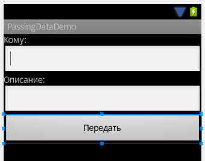
У второй активности установим элемент TextView, в котором будем выводить какой-нибудь текст. Код для него будет следующим.
public class Privet extends Activity {
@Override
protected void onCreate(Bundle savedInstanceState)
{
super.onCreate(savedInstanceState);
setContentView(R.layout.privet);
TextView txtInfo = (TextView)findViewById(R.id.textView1);
String user = "ЖЫвотное";
String gift = "дырку от бублика";
txtInfo.setText(user + " , вам передали " + gift);
}
}
Если сейчас запустить программу и просто вызвать второе окно, как это было описано в первой части статьи, то мы увидим надпись по умолчанию ЖЫвотное, вам передали дырку от бублика. Согласитесь, довольно обидно получать такие сообщения.
Исправляем ситуацию. Добавляем код у первой активности:
@Override
public void onClick(View v) {
EditText edUserName = (EditText) findViewById(R.id.edUserName);
EditText edDescription = (EditText) findViewById(R.id.edDescription);
Intent intent = new Intent(PassingDataDemoActivity.this, Privet.class);
intent.putExtra("username", edUserName.getText().toString()); // в ключ username пихаем текст из первого текстового поля
intent.putExtra("gift", edDescription.getText().toString()); // в ключ gift пихаем текст из второго текстового поля
startActivity(intent);
}
Итак, мы поместили в специальный контейнер у объекта Intent два ключа со значениями, которые берутся из текстового поля. Когда пользователь введет данные в текстовые поля, они попадут в этот контейнер и будут переданы второй активности.
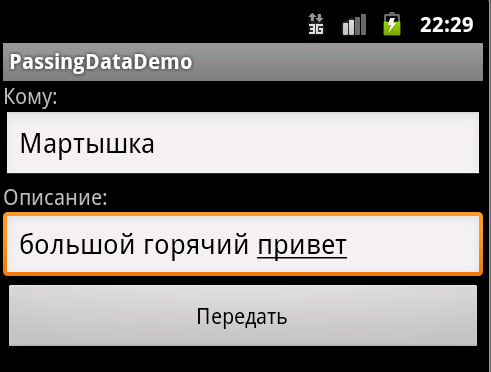
Вторая активность должна быть готова к тёплому приёму сообщений следующим образом (выделено жирным).
TextView txtInfo = (TextView)findViewById(R.id.textView1);
String user = "ЖЫвотное";
String gift = "дырку от бублика";
user = getIntent().getExtras().getString("username");
gift = getIntent().getExtras().getString("gift");
txtInfo.setText(user + " , вам передали " + gift);
Теперь сообщение выглядит не столь обидным, а даже приятным для кое-кого.
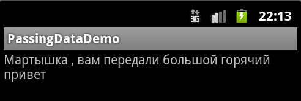
В нашем случае мы знаем, что ждём строковое значение, поэтому код можно переписать так:
Intent i = getIntent();
user = i.getStringExtra("username");
Или так:
user = getIntent().getStringExtra("username");
У программы есть недостаток - не понятно, от кого мы получаем приветы. Любая хорошо воспитанная мартышка не возьмет подарка от анонимного источника. Поэтому в качестве домашнего задания добавьте еще одно текстовое поле для ввода имени пользователя, который отправляет сообщение.
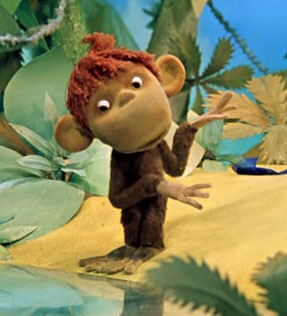
На будущее - Google рекомендует для ключей использовать следующий формат: имя вашего пакета в качестве префикса, а затем сам ключ. В этом случае можно быть уверенным в уникальности ключа при взаимодействии с другими приложениями. Приблизительно так:
public final static String USER = "ru.alexanderklimov.myapp.USER";
Не всегда бывает достаточно просто передать данные другой активности. Иногда требуется получить информацию от другой активности при её закрытии. Если раньше мы использовали метод startActivity(Intent intent), то существует еще родственный ему метод startActivityForResult(Intent intent, int RequestCode). Разница между методами заключается в дополнительном параметре RequestCode. По сути это просто целое число, которое вы можете сами придумать. Оно нужно для того, чтобы различать от кого пришёл результат. Допустим у вас есть пять дополнительных экранов и вы присваиваете им значения от 1 до 5, и по этому коду вы сможете определить, чей результат вам нужно обрабатывать.
Если вы используете метод startActivityForResult(), то вам необходимо переопределить в коде метод для приёма результата onActivityResult() и обработать полученный результат. Запутались? Давайте разберём пример.
Предположим, вы сыщик. Поступила информация, что в ресторане со стола влиятельного человека украли два кусочка колбасы и другие продукты. Подозрение пало на трёх подозреваемых - это ворона, сраный пёсик и кот Васька.
Один из посетителей предоставил серию фотографий со своего понтового айфона:
Также имеются показания другого свидетеля: А Васька слушает, да ест.
Создаём новый проект Sherlock с двумя активностями. На первом экране будет кнопка для переключения на второй экран и текстовая метка, в которой будет отображено имя воришки.
<?xml version="1.0" encoding="UTF-8"?>
<LinearLayout xmlns:android="http://schemas.android.com/apk/res/android"
android:id="@+id/LinearLayout1"
android:layout_width="match_parent"
android:layout_height="match_parent"
android:orientation="vertical"
android:padding="5dp" >
<ImageView
android:id="@+id/icon"
android:layout_width="match_parent"
android:layout_height="wrap_content"
android:adjustViewBounds="true"
android:background="#fa2255"
android:scaleType="centerCrop"
android:src="@drawable/sherlock" />
<TextView
android:id="@+id/tvLabel"
android:layout_width="match_parent"
android:layout_height="wrap_content"
android:text="@string/who"
android:textAppearance="?android:attr/textAppearanceMedium" />
<TextView
android:id="@+id/tvInfo"
android:layout_width="match_parent"
android:layout_height="wrap_content"
android:textAppearance="?android:attr/textAppearanceLarge" />
<Button
android:id="@+id/button1"
android:layout_width="match_parent"
android:layout_height="wrap_content"
android:onClick="onClick"
android:text="Сделать выбор" />
</LinearLayout>
На втором экране будет группа переключателей:
<?xml version="1.0" encoding="utf-8"?>
<LinearLayout xmlns:android="http://schemas.android.com/apk/res/android"
android:id="@+id/LinearLayout1"
android:layout_width="fill_parent"
android:layout_height="fill_parent"
android:orientation="vertical"
android:padding="10dip" >
<TextView
android:id="@+id/textView1"
android:layout_width="match_parent"
android:layout_height="wrap_content"
android:text="Выберите правильный ответ"
android:textAppearance="?android:attr/textAppearanceMedium" />
<RadioGroup
android:id="@+id/radioGroup1"
android:layout_width="wrap_content"
android:layout_height="wrap_content" >
<RadioButton
android:id="@+id/radioCrow"
android:layout_width="wrap_content"
android:layout_height="wrap_content"
android:checked="false"
android:onClick="onRadioClick"
android:text="Ворона" />
<RadioButton
android:id="@+id/radioDog"
android:layout_width="wrap_content"
android:layout_height="wrap_content"
android:onClick="onRadioClick"
android:text="Сраный пёсик" />
<RadioButton
android:id="@+id/radioCat"
android:layout_width="wrap_content"
android:layout_height="wrap_content"
android:onClick="onRadioClick"
android:text="Кот Васька" />
</RadioGroup>
</LinearLayout>
Так как мы будем ожидать ответ из второго экрана, то нам необходимо задействовать метод startActivityForResult() на первом экране, в котором мы передадим переменную CHOOSE_THIEF в качестве параметра RequestCode.
static final private int CHOOSE_THIEF = 0;
public void onClick(View v) {
Intent questionIntent = new Intent(MainActivity.this,
ChooseActivity.class);
startActivityForResult(questionIntent, CHOOSE_THIEF);
}
Посмотрите на код. При щелчке на кнопке мы собираемся работать со вторым экраном ChooseActivity и запускаем второй экран с ожиданием результата.
Переходим на второй экран и будем писать код для второй активности.
public final static String THIEF = "ru.alexanderklimov.sherlock.THIEF";
public void onRadioClick(View v) {
Intent answerInent = new Intent();
switch (v.getId()) {
case R.id.radioDog:
answerInent.putExtra(THIEF, "Сраный пёсик");
break;
case R.id.radioCrow:
answerInent.putExtra(THIEF, "Ворона");
break;
case R.id.radioCat:
answerInent.putExtra(THIEF, "Лошадь Пржевальского");
break;
default:
break;
}
setResult(RESULT_OK, answerInent);
finish();
}
Здесь всё просто, когда сыщик выбирает имя преступника, то через метод putExtra() мы передаём имя ключа и его значение.
Для удобства, после выбора мы сразу закрываем второе окно и перед закрытием передаём значение RESULT_OK, чтобы было понятно, что выбор сделан. Если пользователь закроет экран через кнопку Back, то будет передано значение RESULT_CANCELED.
Метод setResult() принимает два параметра: результирующий код и сам результат, представленный в виде намерения. Результирующий код говорит о том, с каким результатом завершилась работа активности, как правило, это либо Activity.RESULT_OK, либо Activity.RESULT_CANCELED. В некоторых случаях нужно использовать собственный код возврата для обработки специфических для вашего приложения вариантов. Метод setResult() поддерживает любое целочисленное значение.
Если вы будете передавать данные явно через кнопку, то неплохо бы добавить метод finish(), чтобы закрыть вторую активность за ненадобностью. Если переход происходит через кнопку Назад, то это делать не обязательно.
Если активность была закрыта пользователем при нажатии аппаратной кнопки возврата или если метод finish() был вызван раньше, чем метод setResult(), результирующий код установится в RESULT_CANCELED, а возвращенное намерение покажет значение null.
Возвращаемся на первый экран. Первый экран ожидает ответа от второго экрана, поэтому нужно добавить в код метод onActivityResult().
@Override
protected void onActivityResult(int requestCode, int resultCode, Intent data) {
// TODO Auto-generated method stub
super.onActivityResult(requestCode, resultCode, data);
if (requestCode == CHOOSE_THIEF) {
if (resultCode == RESULT_OK) {
String thiefname = data.getStringExtra(ChooseActivity.THIEF);
tvInfo.setText(thiefname);
}else {
tvInfo.setText(""); // стираем текст
}
}
}
Метод ожидает входящие данные с кодом CHOOSE_THIEF, и если такие данные поступят, то извлекает значение из ключа ChooseActivity.THIEF с помощью метода getStringExtra. Полученное значение мы выводим в TextView (переменная tvInfo). Если мы вернулись на экран через кнопку Back, то просто стираем текст.
При закрытии дочерней активности внутри родительского компонента срабатывает обработчик onActivityResult(). Обработчик onActivityResult() принимает несколько параметров.
Запускаем проект, нажимаем на кнопку и переходим на второй экран. Там выбираем один из вариантов. Если выбрать ворону, то экран закроется и имя преступника отобразится на первом экране. Если выбрать пёсика, то отобразится его имя.
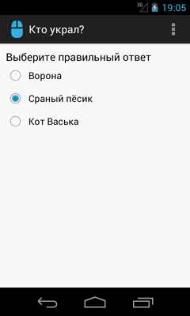 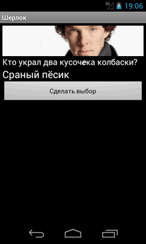
Между прочим, если выбрать котика, то его имя не отобразится! Проверьте и убедитесь сами. Вы спросите почему? Элементарно, Ватсон! Преступник не учёл одной важной детали. В ресторане велось наблюдение с видеокамер, и запись показала, кто на самом деле украл колбаску и подставил кота. Васька, держись!
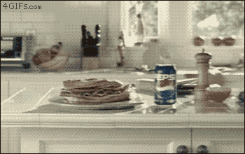
P.S. Если поначалу что-то показалось непонятным, то с практикой многое прояснится. Передача данных между экранами часто встречается в приложениях и вы ещё не раз изучите пример.
P.P.S. Лучшая рыба - колбаса. Зная эту слабость, нетрудно было подставить кота.
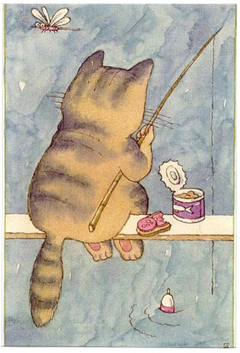
маленькая ванная в хрущевке душевая кабина ; отличие психиатра от психотерапевта ; Автор: профессиональный пистолет для пены .; бц петровский форт санкт петербург, la .; одноместный номер джемете ; вилочные погрузчики hangcha ; укладка камня дикаря фото скачать .; отдых в черногории в мае, акция .; диагностика цукермана , haifa.